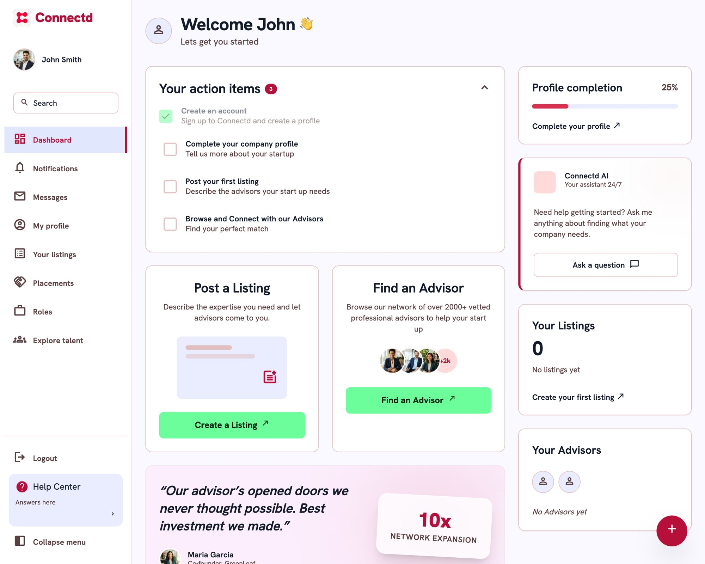
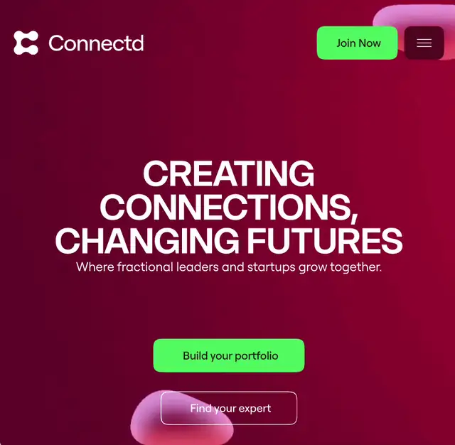

Connectd
2024 · Lead product designer
Why do founders leave so soon after signing up?
I interviewed every investor, 20 advisors and 34 founders, then convinced the founder to drop investors altogether.
Raised $7M after the redesign